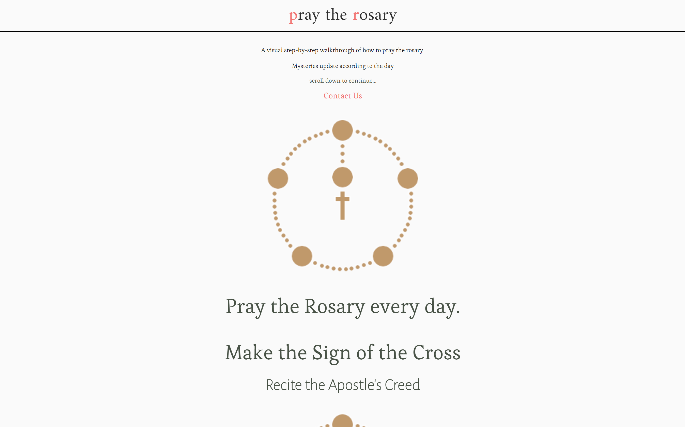
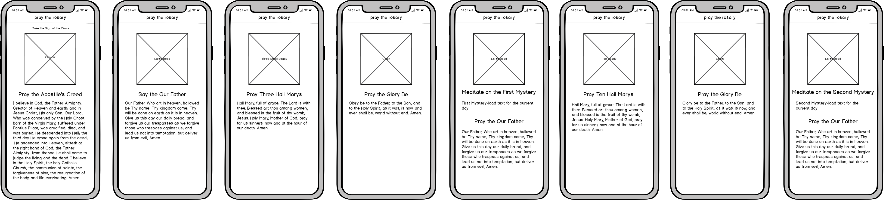
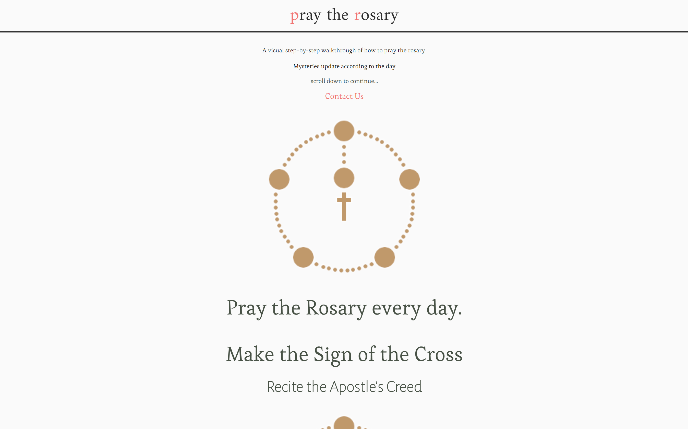
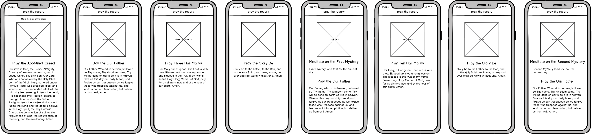

James Ostergaard
praytherosary.nyc
Accomplished
- Design Website
- Branding
Tools
- Sketching
- Wireframing
- Prototyping
- Mockups
- Front-end Development
- Interaction Design
- HTML/CSS
- Balsamiq
A solemn, minimalistic website to guide users through prayers of the rosary.

The user journey was predetermined by the content of the system(the prayer). My focus was on creating an engaging experience. This was done by adding images that corresponded to the text, which seems simple, but the competitors websites required studying the images and text before being able to put them together. My system was designed to be accessible to all users, regardless of exposure to praying the rosary


The Meditation aspect of daily rosary prayers is automatically updated each day, creating an intitive experience.

The experience and interactions that this system creates are religious because they are repetitive. The color palette of muted white, brown and pink create an atmosphere of solemnity, enhanced by the lack of distractions.

The user journey was predetermined by the content of the system(the prayer). My focus was on creating an engaging experience. This was done by adding images that corresponded to the text, which seems simple, but the competitors websites required studying the images and text before being able to put them together. My system was designed to be accessible to all users, regardless of exposure to praying the rosary

The Meditation aspect of daily rosary prayers is automatically updated each day, creating an intitive experience.
The experience and interactions that this system creates are religious because they are repetitive. The color palette of muted white, brown and pink create an atmosphere of solemnity, enhanced by the lack of distractions.